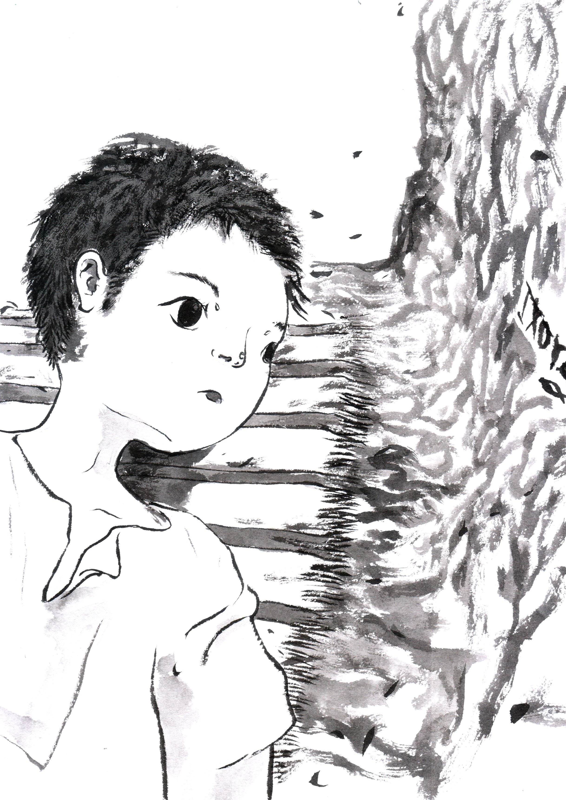

第3章

完成工作後，伯里克利感到極度的疲憊，彷彿剛跑完八百公尺測驗，讓他很想直接倒在地上。
幸好，索弗克勒斯告訴他事務已告一段落，並帶他回到第二層的休息室。
「好好休息一下吧，剛來到地下城的人都需要一段時間才能完全適應這裡。如果有任何問題可以再來找我。」來到休息室後，所弗克勒斯為他安排了一個靠牆的位置。
「謝謝你。」雖然只是簡單的一句道謝，但伯里克利真心感激眼前這位青年。他想，如果這裡的人都跟索弗克勒斯一樣好心，那他就不用提心吊膽的了。
休息室裡還有不少人，大家共用這個空間，有些人在講話，但伯里克利現在無心顧及其他人。在這個陌生的環境停留了這麼長的時間，現在的他需要一個只有自己的地方好好沉澱一下。
獨自仰躺在用土堆起的「床」上，下方只鋪著薄薄一塊織品當床墊，他不理會硬床帶來的不適，只慢慢地回想剛剛發生的一切，同時感受睏意襲來。
這時伯里克利突然注意到在身旁的土牆上，有一些粗糙的雕刻圖案。轉頭面對牆壁試圖看清楚後，他赫然發現，這些圖案併在一起看，竟然與歷史課上老師秀出的那張照片上的符號相似。圖案大約比手掌再小一些，刻痕清楚地畫出五個希臘字母：
IXΘYΣ
右下角，還有一隻魚的簡易圖形。
「我是為了這個神秘的符號才來到這裡，看來它真的與地下城有關。」
「不過還是不知道這代表什麼⋯⋯」隨著睡意蔓延，伯里克利漸漸睡去，一切令他不解的事物都暫時被拋到腦後。
「喂，伯里克利，快起來。」朦朧之中傳來索弗克勒斯的呼喊聲。
伯里克利從睡夢中驚醒，意識到這一覺並沒有讓他回到原本的家，這使他開始懷念起自己溫暖的小房間了。
「你再不起來，飯要被大家吃光了。」聽見索弗克勒斯的好心提醒，伯里克利趕緊離開床鋪，隨著索弗克勒斯來到眾人一起用餐的地方。
管飯食的人正分配著食物，將大鍋裡的麥片粥一匙匙盛出，放在小碗裡，而一旁的盤子上有些許圓餅。地下城的人們在食堂內一邊吃飯，一邊聊著天。
一眼望過去大約有一百多人聚集在此處。五、六個人圍坐在一長桌前，討論著伯里克利聽不太懂的事。他坐在索弗克勒斯旁邊，後來又有兩個人來到他們這一桌坐下來。
索弗克勒斯和他們打完招呼後，說道：「一起謝飯吧。」便與其餘兩個陌生人便一同閉起眼。伯里克利這才想起居住在地下城的大家都是基督徒，趕緊跟著一起閉上眼睛。
「感謝神，賜予我們今日的飲食。願祢旨意成全，願祢榮耀顯明，願祢再來。奉主之名禱告，」
「阿們。」四人結束了謝飯，便開始享用起桌上的食物。
伯里克利看著碗裡的粥，糊糊的粥加了一點鹽巴、一點橄欖油，看起來真不是什麼美味的東西。想到身處於地底下，他顧不得好不好吃，索性就著碗喝起粥來。比起粥，小麥做的圓餅更令伯里克利驚艷，雖然吃起來乾乾的，但沾上一點鹽巴後卻風味十足。儘管新奇，可他還是更懷念便利商店賣的愛心牛奶球麵包。
「不知道現在地上怎麼樣了。」開口的是一個看起來四十多歲的男人。男人留著濃密的鬍子，衣服上縫有好幾個口袋，裡頭似乎裝著大大小小的零件。
「照前天送來的信看來，情況還是很不理想。有三個人被帶到競技場⋯⋯而且巡撫皮里鈕還在到處抓人。」索弗克勒斯一邊回答，一邊埋頭吃著粥。
「說到皮里鈕[1]，聽說他抓到我們的人，就會審問他是不是基督徒，如果承認，就會受到懲罰，若懲罰後還是堅持自己是基督徒，皮里鈕就下令處決。」坐在留鬍子男人右邊的女子補充道。她看起來比男人年輕幾歲。
「沒錯。而且這件事已經得到他亞努皇帝[2]的許可了。」索弗克勒斯抬起頭，嚴肅地說道。
短短幾句聊天內容，對伯里克利來說彷彿是一顆震撼彈，他馬上想起歷史課上教到的西洋史中，關於羅馬皇帝對基督教的迫害，以及關於尼祿如何把縱火事件嫁禍到當時的基督徒身上，使他們遭受極其殘忍的對待。
白紙黑字寫在歷史課本上的故事，對一個普通高中生來說，大概只有被拿來出成考題的份，但如今自己竟然會真實地身處在這個時代，想到這裡，伯里克利額上不禁冒出冷汗。
「看來你那裡有不少新的消息。那封信上還說了什麼嗎？」女子問索弗克勒斯。
索弗克勒斯看起來面有難色，猶豫了一陣，最終還是開口說道：「伊格納丟主教，上個禮拜被帶到羅馬了。」他放下手上的碗，雙眼直視著坐在對面的女子，女子也直直回視著他。
留鬍子的男人聽了，也停下原本拿起圓餅的手。伯里克利清楚感受到，雖然這三人面色鎮定，但巨大的悲傷如厚重的烏雲般籠罩在這餐桌上方。
「信裡是怎麼說的，請告訴我們。」過了數秒後，男人才開口。
索弗克勒斯緩緩地從衣服口袋中拿出折起的信，並照著信上所寫，慎重地讀了起來。
親愛的凱馬克立的朋友們：
寫這封信是為了將地上的現況傳遞給你們，並堅固你們的信心。首先，希望你們在凱馬克立的生活能更加穩定下來，你們不必太擔憂我們的狀況，因為有 神的平安在我們中間。關於地上的情形，確實有許多危險與逼迫持續向我們攻擊。皮里鈕的行為受到皇帝許可，接下來可能會擴大對我們的搜索。我們南邊的城鎮中，有三位朋友在競技場中離開了世界。此外，我們從安提阿傳來的消息得知，伊格納丟主教被送往羅馬，並且在那裡受刑了。兇猛的獅子撕裂了他的身體。我們無不感到沉重的哀痛。但這哀痛不是無盡的，因為我們深知，伊格納丟主教面對獅子的攻擊時，心裡仍懷抱著對 神的堅定；並且我們也確信，在不久的將來，伊格納丟主教會與我們一同在新天新地中，享受 神至高的美善與慈愛。
但願你們當中也有平安與喜樂，請回信讓我們知道目前地下的一切。我們也會盡快給予你們回覆。儘管距離遙遠，就讓我們時常在主裡彼此紀念與代求。
願 神保守
以弗所的弟兄姐妹們 上
剛聽完這一切，伯里克利還陷於惶恐之中，他完全無法理解身邊這群人怎麼有辦法保持冷靜，一度讓他懷疑自己聽到的只是幻覺。
「好了，大家都吃完飯了，回去吧。伯里克利，你跟我一起去幫忙清理馬廄吧。」索弗克勒斯喊道。其他兩人也起身收拾碗盤。
伯里克利還沒從震驚中恢復過來，只是連忙起身，一語不發地追上索弗克勒斯，同時思緒飛速運轉著：「原來他們的敵人就是整個政府和社會，竟然被迫害到這種程度嗎⋯⋯但是為什麼他們還要如此堅持？怎麼會寧願冒這麼大的危險？簡直瘋狂⋯⋯」
馬廄裡，伯里克利心不在焉地照著索弗克勒斯的指示刷洗地上的髒污，一方面越來越擔心這裡隨時有人闖入，抓走他們；同時也覺得無法明白這群人在想什麼。
「你怎麼了？」索弗克勒斯問道。似乎察覺到他的異樣。
伯里克利沉默了半晌，不作言語。索弗克勒斯看他不回答，便回頭繼續清理馬槽。
「其實我有點不明白，你們都不會害怕嗎？」伯里克利小聲道出心中的懷疑。
「喔～原來你在想這個嗎？我還以為你吃壞東西耶。」索弗克勒斯忍不住笑出來，彷彿鬆了一口氣，但又立刻恢復一臉正經的樣子。
「說不害怕是假的，但當你知道自己相信的是什麼，就比較不怕了吧。耶穌是上帝的兒子，是救世主。我就是這麼相信的。」索弗克勒斯微笑著，手上仍不停刷著馬槽。
「喔⋯⋯」伯里克利聽的不是很明白。
在地下城度過了四天，伯里克利漸漸地習慣了這裡的人和生活。但他知道這裡並不是一個安全的地方。事實上，這群人生活在地底下是為了躲避地上對基督徒的壓迫。
這日一早，伯里克利一如既往睡醒，準備前往馬廄工作，但這時索弗克勒斯叫住了他。
「你要去哪？今天是安息日，大家都聚集在教堂了。」說著便轉頭要往教堂走去。
「啊，好，我這就過去。」伯里克利回應道。
眾人魚貫進入並在會堂中等候，雖然塞滿了人，卻沒有什麼吵雜的聲音，每個人都安靜地找到位置，就位後便各自默禱。
不久後一位長者來到臺上，伯里克利距離講臺有點遠，因此看不清長者的模樣，他猜想這個人就是牧師。長者肅立於講臺中央，對著眾人講話。他聲音十分宏亮，因此伯里克利站在人群中，依舊能清楚聽見長者說的每一句話。
「今天，讓我們再次回顧使徒彼得給我們的鼓勵。一百多年前，使徒彼得寫信給加帕多家的我們，使我們重燃對基督的堅定與信心。」
伯里克利想起以前讀到彼得前書第一章，第一節就說彼得寫信給好幾個地方寄居的基督徒。這使他再次意識到自己就處在真實的歷史之中。
以前讀經時，從沒有想像過這些使徒們的書信是在什麼樣的環境下寫出來的，所以常常不懂經文到底想表達什麼。也不知道有過現在的經歷後，再回去讀那些書信的內容，會不會有不一樣的體會。
「願恩惠、平安多多的加給你們。願頌讚歸與我們主耶穌基督的父神！他曾照自己的大憐憫，藉耶穌基督從死裡復活，重生了我們，叫我們有活潑的盼望，可以得著不能朽壞、不能玷污、不能衰殘、為你們存留在天上的基業。你們這因信蒙 神能力保守的人，必能得著所預備，到末世要顯現的救恩。因此，你們是大有喜樂；但如今，在百般的試煉中暫時憂愁，叫你們的信心既被試驗，就比那被火試驗仍然能壞的金子更顯寶貴，可以在耶穌基督顯現的時候得著稱讚、榮耀、尊貴。你們雖然沒有見過他，卻是愛他；如今雖不得看見，卻因信他就有說不出來、滿有榮光的大喜樂；並且得著你們信心的果效，就是靈魂的救恩。」[3]長者以堅定的口吻朗誦出彼得書信中的一段。
「是的，我們的救主，耶穌，他必快來。如此深信著的我們，就算恐懼軟弱，仍有大喜樂在我們心中。盼望在於復活的基督！期盼末後的日子，我們一同享受在主榮耀的國度。」眾人聽見長者的鼓勵都大受感動，有些人流著淚，也有人頻頻點頭。只有伯里克利呆呆地站在原地。
伯里克利知道耶穌是他們的盼望和拯救，但一連串壓在心底的困惑在此刻全都爆發出來。「為什麼這些人都這麼堅持相信耶穌呢？他們明明遭受慘無人道的迫害啊！」他不禁在心中吶喊：「你們都不知道，耶穌過了兩千多年都還沒再來⋯⋯」
此時伯里克利覺得這個地方只剩下他一個人了，儘管周圍都是同樣相信耶穌的人們，但對他們的不理解，使他產生一股強大的疏離感。
臺上長者的聲音逐漸模糊，伯里克利再也聽不進去那些鼓舞人心的話。他又想起索弗克勒斯，擡頭就可看見這個和他差多年紀的少年，埋在人群之中，只露出後腦勺。
「索弗克勒斯，他，也一樣吧？搞不好明天就換成他被羅馬士兵抓走，被定罪，被送進獅子的口中⋯⋯」想到這裡，伯里克利陷入深不見底的絕望中，他彷彿看見索弗克勒斯在競技場上面對獅子的神情，和這幾天他所見的眼神一樣，沒有猶疑，永遠堅定地凝望著，只有在獅子的尖牙扯開他的皮與肉時，才深鎖眉頭，閉上雙眼。
回過神時，教堂內真的只剩下他自己了，聚會已經結束，大家又回到各自的崗位。但伯里克利想回家了。
這天晚上，伯里克利在床上輾轉難眠，他想著這幾天所見到的一切，對這一切人事物的懷疑在他腦海中徘徊。
「難道對他們來說，生命可以這麼輕易地放棄嗎，只要承認羅馬政府，就可以好好活下來了，只要活著，都還有轉圜的空間吧。他們怎麼就這麼倔強呢？其實被迫害也是他們自找的吧⋯⋯」對伯里克利來說，地下城的思維只剩下荒謬可以形容。
「或許我就是無法理解他們的決心吧？我根本就不屬於這個地方啊！」想著想著，他不僅沒有感到睏意，甚至更加清醒。伯里克利不想再管這群地底人，也不想再找那串希臘字母的意義了。
他坐起身，下床，無聲無息地離開。
不知不覺間，徐心昀已回到家中的儲藏室。和當初她下來找資料時一樣，並沒有什麼變化。
「心昀，已經很晚了，改天再找吧！快去刷牙睡覺！」樓上傳來媽媽呼喚的聲音，讓徐心昀感到無比的安心，她知道自己已經回到真正的家。身旁不再有她無法理解的人，也不再身處於一個基督徒被迫害的環境。
註解：
[1] 基督教會史略——改變教會的十人十事，梁家麟著，P64-66。
[2] 同上。
[3] 彼得前書 1:2-9